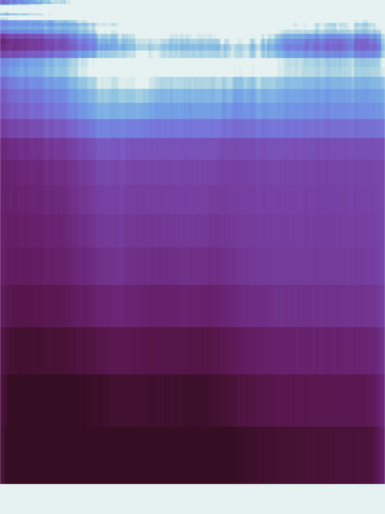
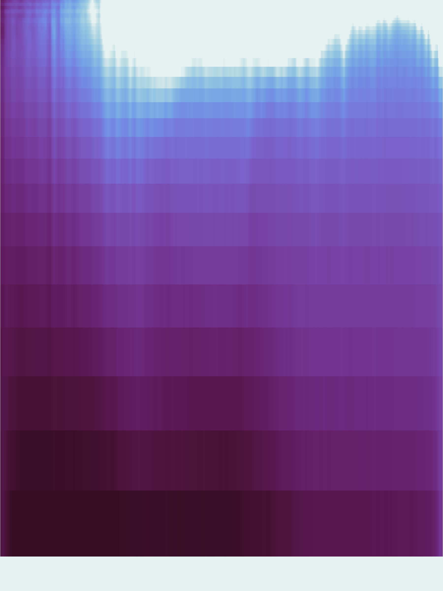

graph TD
A(Scientific Expertise) --- C{RSE Bridge}
B(Software Engineering) --- C
C --> D[Sustainable Tools]
classDef default fill:#1a365d,stroke:#fff,stroke-width:2px,color:#fff,font-size:18px;
classDef highlight fill:#84BD00,stroke:#fff,stroke-width:2px,color:#fff,font-size:18px;
classDef bridge fill:#003E51,stroke:#fff,stroke-width:2px,color:#fff,font-size:18px;
class A,B default;
class C bridge;
class D highlight;
linkStyle default stroke:#fff,stroke-width:2px;
Spinup-Evaluation
A Physics-Based Benchmarking Platform for ML-Based Spinup of the NEMO Ocean Model
Matt Archer ![]()
2026-02-24
Is RMSE enough?

Unconstrained

Constrained

Reference
| Unconstrained | Constrained | Reference | |
|---|---|---|---|
| \(T\) DW | 2.9 | 2.6 | 2.6 |
| \(\rho\) error | 26.8 | 0.4 | 0.4 |
Evaluate even when resolution changes.
Developer highlights
Spinup-restart/translator (2)
- Take an emulator state and converts to NEMO compatible
restart.ncfile - Basic validation gate; does grid encoding and sanity checks (existence of
NaNsetc) - Regrid, upscale, downscale resolution;
- Encode other physical assumptions (geostrophic velocities)
reference files
↓
restart.nc
→
Spinup
Translator
Translator
→
Spinup
Evaluation
Evaluation
→
metrics.csv
output.nc
→
mmask.nc
→
raw.npy
→

Translate between other ocean model restart files - potentially difficult due to grids (in progress..)
Software engineering
Modular & Generalizable
- Reusable components across domains
- Extensible to new models (e.g., MOM6, Oceananigans)
Quality & Standards
- Robust testing (Unit, Integration, Coverage) with CI
- Well documented end-to-end examples (hybrid)
- Data products adhere to FAIR (see Wilkinson et al. 2016)
- Collaborative Design: Bridging Science & RSE


Eliminating silos through cross-disciplinary partnership.
Thanks for Listening
Get in touch:
The ICCS received support from